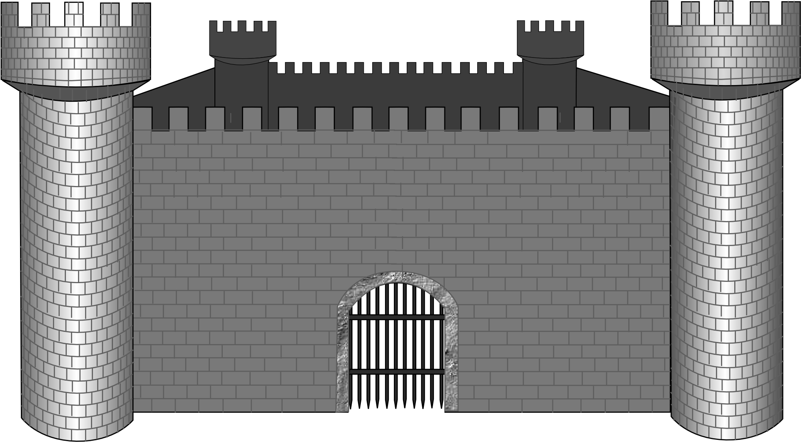

It was a Princess who was standing outside the door. What with the rain and the wind, she was in a sad condition; the water trickled down from her hair, and her clothes clung to her body. She said she was a real Princess. "Ah! we shall soon see that!" thought the old Queen-mother; however, she said not a word of what she was going to do; but went quietly into the bedroom, took all the bed-clothes off the bed, and put three little peas on the bedstead. She then laid twenty mattresses one upon another over the three peas, and put twenty feather beds over the mattresses. Upon this bed the Princess was to pass the night.
Source: Clker Free Vector Images, Knights Castle, (Pixabay.com)